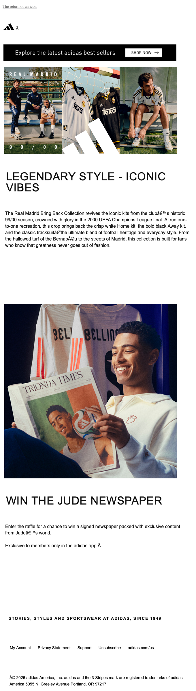

Just restocked: Real Madrid Bring Back jerseys
| From | adidas <adidas@us-news.comms.adidas.com> |
| Received | 2026-04-01 15:08 UTC |
| Score | 5/10 |
## Email Review: "Just restocked: Real Madrid Bring Back jerseys"
From: adidas | Date: 2026-04-01
1. Executive Summary
This email attempts to serve two distinct purposes — a product restock alert for Real Madrid Bring Back jerseys and a membership raffle for a signed Jude Bellingham newspaper — and does neither particularly well. The hero does solid visual work, but a broken character encoding bug corrupts the body copy, and the dual-module structure splits focus at exactly the moment the subject line's urgency ("Just restocked") should be closing the loop. The Jude Newspaper module is the stronger creative idea but it's buried and underserved.
2. Business Impact Score: 5/10
Held back by the encoding bug and a muddled message hierarchy. The Real Madrid brand equity is real; the execution doesn't capitalize on it.
3. What's Working
- Hero imagery is clean and on-brand. The three-panel Real Madrid jersey carousel is well-lit and visually confident — white kits read as premium and instantly recognizable.
- "LEGENDARY STYLE - ICONIC VIBES" headline is punchy and era-appropriate for a Bring Back/throwback angle.
- Jude Newspaper module has genuine intrigue. The "THE JUDE TIMES / BELLINGHAM" newspaper prop is visually creative and membership-exclusive framing adds scarcity.
- Layout is simple and uncluttered — no visual noise, adidas branding stays consistent throughout.
4. What's Weak
- Visible encoding artifacts in body copy. The product description block contains broken characters — rendered as
’sinstead of apostrophes (e.g., "Jude’s world," "club’s"). This is visible and unprofessional; it damages credibility at the moment the reader is evaluating whether to buy. - No urgency mechanics in the product section. The subject line says "Just restocked" but the body module doesn't reinforce scarcity — no "limited sizes," no "shop before it sells out," no unit count. The restock narrative is abandoned after the subject line.
- Two competing value propositions with no hierarchy. Buy the jersey OR enter a raffle? These should be sequenced (buy → qualify, or separate sends), not stacked. Neither gets a strong CTA emphasis.
- No visible price or product details. The jersey section doesn't show a price point, which forces the reader to click just to learn the basics.
- "Win the Jude Newspaper" is app-exclusive but that's a footnote. "Exclusive to members only in the adidas app" is small text below the module. This should be the lead — it's the reason to open the app.
5. Recommendations
1. Fix the encoding bug immediately — this is table-stakes. Characters like ’ in rendered copy should trigger a resend or suppression before further deployment.
2. Separate these two value propositions into distinct sends, or if keeping them together, make the jersey purchase the gate to the Jude raffle entry.
3. Add scarcity language to the hero block — even a simple "Back in stock — limited run" sub-headline validates the subject line and creates pull.
4. Surface the app-exclusive angle for the Jude Newspaper as a headline, not a footnote. "Members only. Open the app to enter." is a stronger call to action than what's currently shown.
5. Include a visible price or "Shop Now" CTA on the jersey module so the conversion path is a single click, not a hunt.
6. Bottom Line
There's a legitimately compelling campaign in here — Real Madrid nostalgia kits plus a Jude Bellingham collectible raffle is strong material. But the encoding bug undercuts trust in the product copy, the dual-module structure diffuses urgency, and the app-exclusive hook is buried. Fix the bug, pick one primary CTA, and treat the Jude raffle as a reward mechanism rather than a side item.
7. Evidence
| Module | Observation |
|---|---|
| Overall purpose | Restock notification for Real Madrid Bring Back jerseys, with a secondary membership raffle for a Jude Bellingham signed newspaper |
| Hero / primary value prop | Three-panel Real Madrid jersey imagery with "LEGENDARY STYLE - ICONIC VIBES" headline; strong visual, but no price or explicit CTA button visible in the panel |
| Membership / benefits section | "Win the Jude Newspaper" module — raffle for a signed newspaper exclusive to adidas app members; visually distinct but undersells the app-exclusive hook |
| Product discoverability | Limited — jersey module shows product but no specs, price, or clear shop link |
| Utility / secondary modules | Standard footer: My Account, Privacy Statement, Support, Unsubscribe, adidas.com — functional, no issues |
| Bugs / friction / clarity | Visible encoding artifact in body copy: apostrophes rendered as ’ (confirmed visible in both the jersey description block and the Jude Newspaper copy) |
## Technical Audit
## Technical Audit — adidas "Just restocked: Real Madrid Bring Back jerseys"
1. Technical Summary
One broken click-through link will prevent a subset of recipients from reaching the intended landing page. Several images are served over HTTP, risking blocked rendering in modern clients that enforce mixed-content policies.
2. Link & Tracking Issues
[FAIL] Malformed deep-link URL
The QA scanner flagged an unknown URL type /g/b161e063-... embedded inside a tracking redirect:
`
https://dv.adidas.com/o/b161e063-1d58-477c-86eb-3c36f4a70261?txn=092a8580-...
`
The destination path uses /g/ rather than the expected /o/ scheme used by the outer redirect wrapper. This likely resolves to a 404 or redirect loop for any click that resolves this particular link. Needs to be corrected in the ESP template before the next send.
[WARN] 24 tracking links not probed
All 24 click-redirect links point through click.comms.adidas.com or dv.adidas.com and were skipped from HTTP validation. The one confirmed broken link above was caught via URL-structure analysis, not an HTTP probe — additional broken destinations may exist undetected.
3. Rendering & Accessibility
[WARN] 5 images served over HTTP (mixed content)
The following image appears 4 times in the email (reused arrow asset):
`
http://image.link.adidas.com/lib/fe6515707c62007e7715/m/3/b0c011a2-d468-414b-a8a2-8595b3ec7b34.jpg
`
And the tracking pixel:
`
http://click.comms.adidas.com/CI0/0102019d49964fe3-7b88df2e-d266-4f4f-86f8-4a88a854e34a-000000/...
`
Both use http://. Gmail, Apple Mail, and Outlook 365 proxy or block non-HTTPS image loads. The arrow image will likely render broken for a significant portion of recipients. The tracking pixel will also fail to fire in these clients, undercounting open rates.
[WARN] 2 images missing alt text
b161e063-1d58-477c-86eb-3c36f4a70261(linked hero/product image) — noaltattributeVuE8rrIurYIBzHRxEeSr4B2ga...(tracking pixel) — noaltattribute
The missing alt on a linked product image is the higher-priority issue: recipients with images disabled see no label, and screen reader users get no content description.
Duplicate @font-face declarations
The AdihausDIN and AdineuePRO font-faces are declared twice in two separate <style> blocks. The second declaration has a shorter src stack (drops Calibri/Sans Serif). This is harmless functionally but adds dead weight (~500 bytes) and creates maintainability risk if the two declarations drift further.
HTML 4.01 Transitional DOCTYPE
`html
<!DOCTYPE html PUBLIC "-//W3C//DTD HTML 4.01 Transitional//EN" ...>
`
This is a legacy doctype that triggers quirks mode in some rendering engines. No functional breakage confirmed, but it is out of step with current ESP best practices (HTML5 or XHTML 1.0 Transitional are more predictable across modern clients).
4. Personalization & Merge Tokens
No unresolved merge tokens (e.g., {{first_name}}, *|FNAME|*) were visible in the truncated HTML source. No issues found.
5. Compliance
[FAIL] Plain-text alternative is empty
`
Text version is 0 chars
`
CAN-SPAM and best-practice deliverability guidelines require a readable plain-text part. A zero-length text part can trigger spam filters and increases the risk of inbox placement failures. Some corporate mail gateways also reject or quarantine HTML-only messages.
[WARN] Authentication headers not confirmed
SPF/DKIM status could not be verified via the AgentMail relay. The sending domain us-news.comms.adidas.com should be covered by adidas's existing DKIM/SPF records, but this send's headers did not expose a parseable Authentication-Results value for confirmation. This should be verified against raw message headers.
No unsubscribe link issues detected in the truncated source (a footer unsubscribe block is present based on CSS class references like .mobile-footer-padding-block).
6. Email-to-Site Continuity
The broken /g/ deep-link (item 2 above) directly breaks email-to-site continuity for at least one CTA. UTM parameter integrity on the remaining 23 tracked links cannot be confirmed without HTTP probing through the redirect chain. No issues found beyond the confirmed broken link.
7. Recommendations
| Priority | Action |
|---|---|
| P0 | Fix the malformed /g/ destination URL in dv.adidas.com/o/b161e063... — active broken CTA |
| P0 | Add a plain-text multipart alternative — currently 0 chars; compliance and deliverability risk |
| P1 | Migrate both HTTP image URLs to HTTPS — affects the arrow asset (×4) and the open-tracking pixel |
| P1 | Add alt text to the linked product hero image (b161e063...) |
| P2 | Confirm DKIM/SPF pass via raw header inspection on the next send |
| P2 | Probe all 24 redirect links end-to-end to rule out additional broken destinations |
| P3 | Deduplicate the @font-face declarations across the two <style> blocks |

Automated QA
Broken Experience
| ✘ | Link error | unknown url type: '/g/b161e063-1d58-477c-86eb-3c36f4a70261?txn=092a8580-2ddd-11f1-86a0-8668c83b363d' https://dv.adidas.com/o/b161e063-1d58-477c-86eb-3c36f4a70261?cp_tp=v3.eJzjYuIIFuLg2Ll5wzk2AWYpXo7jvziF2Dle8QuwSDAqiXM8_pYFFGbj-PB0yzk2JZiE1lYmoKaWvSICjBIsSiuYhEQ5FspoMHqxcDAKMAaByQiuBC4hYY7nUgKMGszIEkLiHC-lBJjQVMcnxAMl2mQEmLEYY8jxSQpkrQKjBpMTF8euR7wS31gVZrJ5cYGUSEGUI7EzbIT0OT5ICbBCNfzZwifxg12hH7cGVqDlb6UE2NAsN0owAkoskRFgx-q511ICHBosaJ57IyXAialaYgGbwlEmIw6Ou7xKzByPHIGsZj4g64wTkLWXH8ha6AZkXQaxbrpZsXLcNpVisOLgOK8hxczRnQ5k7TMCsvbXAVn7QaxDdQ6MURwc1w2FmDn-VQNZN0Csjhog6yaI1VMTxckxxVqIheNeLyOQ2WUDZD7vZwQA-p1ZVQ==&cp_cid=d63aafc3fa4b9098&mi_cid=6739ca39099b72c7&mi_mid=019d4845-6280-7000-bf17-73ed6b5cefe6 |
Deliverability
| ✘ | Plain-text fallback missing or too short | Text version is 0 chars |
| ⚠ | Authentication-Results header not found | Expected via AgentMail relay — SPF/DKIM status unknown |
Info
| ⚠ | 24 tracking link(s) skipped | Tracking/click-redirect domains — skipped HTTP probe |
| ⚠ | Image missing alt text: b161e063-1d58-477c-86eb-3c36f4a70261 | src: https://dv.adidas.com/o/b161e063-1d58-477c-86eb-3c36f4a70261?cp_tp=v3.eJzjYuIIFuLg2Ll5wzk2AWYpXo7jvziF2Dle8QuwSDAqiXM8_p |
| ⚠ | Image uses http://: "arrow" (b0c011a2-d468-414b-a8a2-8595b3ec7b34.jpg) | Non-HTTPS source may be blocked — src: http://image.link.adidas.com/lib/fe6515707c62007e7715/m/3/b0c011a2-d468-414b-a8a2-8595b3ec7b34.jpg |
| ⚠ | Image uses http://: "arrow" (b0c011a2-d468-414b-a8a2-8595b3ec7b34.jpg) | Non-HTTPS source may be blocked — src: http://image.link.adidas.com/lib/fe6515707c62007e7715/m/3/b0c011a2-d468-414b-a8a2-8595b3ec7b34.jpg |
| ⚠ | Image uses http://: "arrow" (b0c011a2-d468-414b-a8a2-8595b3ec7b34.jpg) | Non-HTTPS source may be blocked — src: http://image.link.adidas.com/lib/fe6515707c62007e7715/m/3/b0c011a2-d468-414b-a8a2-8595b3ec7b34.jpg |
| ⚠ | Image uses http://: "arrow" (b0c011a2-d468-414b-a8a2-8595b3ec7b34.jpg) | Non-HTTPS source may be blocked — src: http://image.link.adidas.com/lib/fe6515707c62007e7715/m/3/b0c011a2-d468-414b-a8a2-8595b3ec7b34.jpg |
| ⚠ | Image missing alt text: VuE8rrIurYIBzHRxEeSr4B2gae6zBib4H-eCWQHhtfU=451 | src: http://click.comms.adidas.com/CI0/0102019d49964fe3-7b88df2e-d266-4f4f-86f8-4a88a854e34a-000000/VuE8rrIurYIBzHRxEeSr4B2ga |
| ⚠ | Image uses http://: VuE8rrIurYIBzHRxEeSr4B2gae6zBib4H-eCWQHhtfU=451 | Non-HTTPS source may be blocked — src: http://click.comms.adidas.com/CI0/0102019d49964fe3-7b88df2e-d266-4f4f-86f8-4a88a854e34a-000000/VuE8rrIurYIBzHRxEeSr4B2ga |